|
|
HELP FIND THE FOLLOWING LOCATIONS
PAGE 10
DEPARTMENT S: The Man Who Got a New Face (Cyril Frankel 1968)Unknown: Emilio Andre's arrives at the jetty as instructed and leaves the case of money in a radio-controlled speedboat..
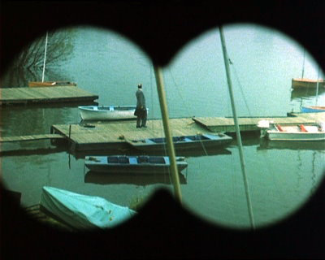
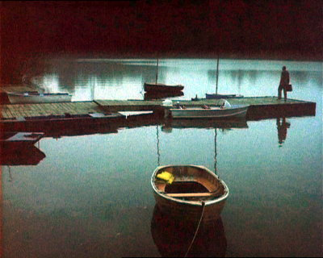
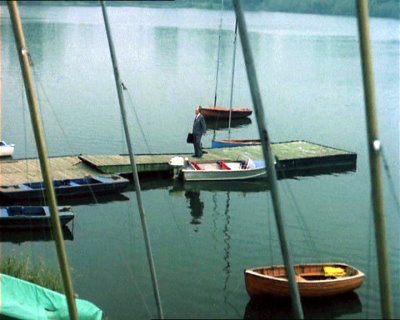
DEPARTMENT S:
The Man from
'X'
H81: Denham Lodge, Oxford Road,
Denham:
Jason follows Leela
Rankin to her
London apartment.
(Identified by Rob Burnham, June 2023)
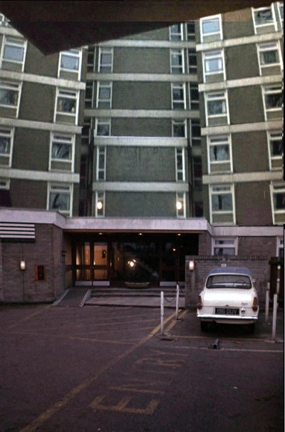

DEPARTMENT S:
Black Out
(Ray Austin: September 1968)
Sheraton-Kingston Hotel, Knutsford Boulevard, Kingston: Stewart
Sullivan Jason
King and Annabelle Hurst travel to The Bahamas on the trail of
Sinclair.
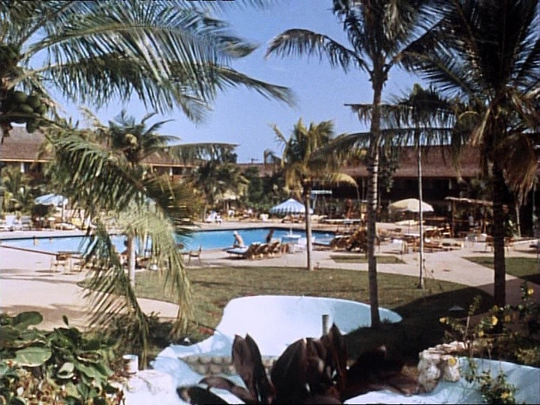
Hotel Sahara, Las Vegas, Navada, USA: Stewart Sullivan Jason King and Annabelle Hurst travel to The Bahamas on the trail of Peter Sinclair.
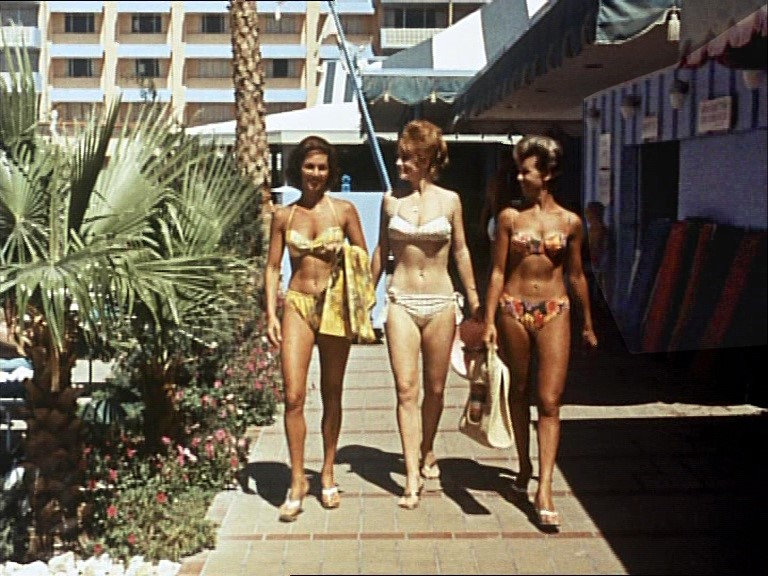
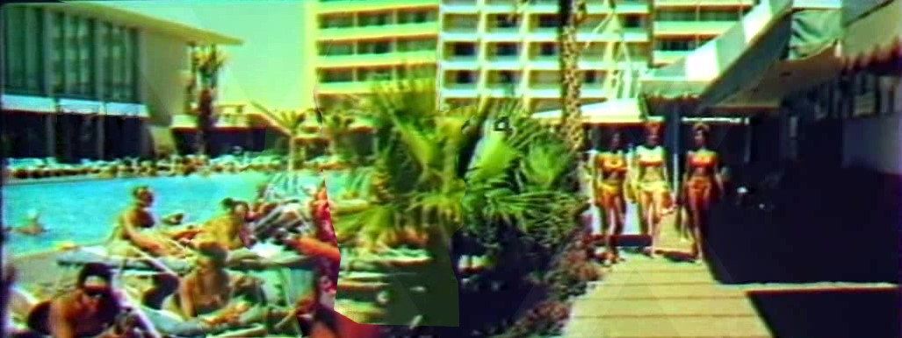
Sans Souci Hotel, Ocho Rios, Jamaica: Having travelled to The Bahamas on the trail of Peter Sinclair, Stewart Sullivan goes to Annabelle Hurst’s room and admires the view from the hotel window.

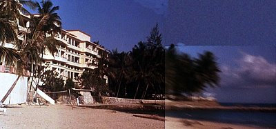
Unknown 5: The beach where Billy and Jason King go for a relaxing swim.
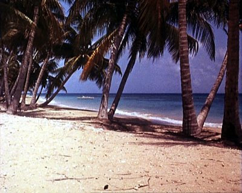
Sans Souci Hotel, Ocho Rios, Jamaica: Jason King’s hotel in The Bahamas.
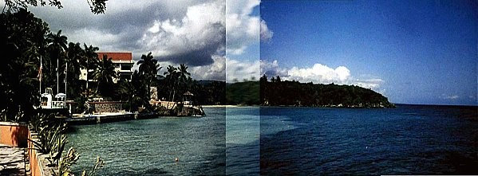
13th Street NW/F Street NW, Washington, DC, USA: Wolfe and Stewart
Sullivan are both driving through Nassau to get to Strober,
the club manager.
(Identified by Sietse Postma, July 2023)


 Also seen in
monochrome in THE CHAMPIONS: Reply Box No. 666
Also seen in
monochrome in THE CHAMPIONS: Reply Box No. 666
International Airport
Hotel, San Juan, Puerto Rico: Wolfe
watches as Jason
King departs Nassau Airport for New York.
(Identified by Geoff Dodd, January 2022)

DEPARTMENT
S: The Treasure Of The
Costa Del Sol (John Gilling:
September 1968)
Massif des Calanques, Marseille,
Alpes-Côte d'Azur, France: The
Costa del Sol July 31st
. Two Americans, Thorn and Cal, are driving on the Costa
del Sol towards
the Punta de Molino headland.
(Identified by Sietse Postma, May 2022)
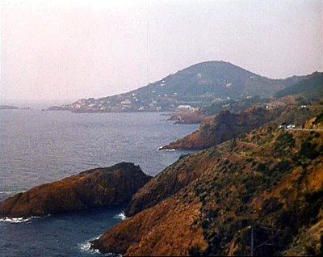
Massif
des Calanques, Marseille,
Alpes-Côte d'Azur, France: Thorn
and Cal drive up to the spot they are going to
dive. Seen later as
night-time establishing shot for Villa Rosemon.
(Identified by Sietse Postma, May 2022)

Unknown 1: After meeting Elaine Jason King is forced to ‘just drive’ his Bentley along the coast road on the Costa del Sol.
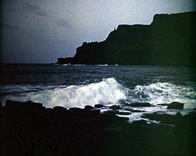
Santa Margherita, Ligure, Italy: Jason King leaves a bar in Costa del Sol after failing to find Elaine there.
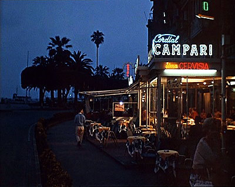
 Footage
here: https://youtu.be/PV9pSnzrJrM
Footage
here: https://youtu.be/PV9pSnzrJrM
Unknown 2: Shot of coast before shot of Villa Rosemon.
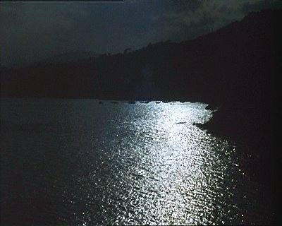
Chateau Périgord, Lacets Saint-Léon, Monaco: Jason is sent to the Hispano Hotel, Torremolinos to lie low.(Identified by Geoff Dodd, January 2022)

Parque Baños del Carmen from Camino de Gibralfaro, Malaga, Spain: Much later Stuart and Annabel drive to Camilo's house posing as American tourists.
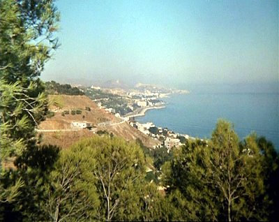
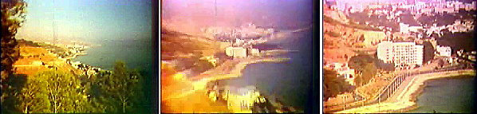
Unknown 3: A boat sets off from Tangiers to drop off payment for Counterfeit notes.
Unknown 4: Simon and Jason take the opportunity to break into villa Rosemon.
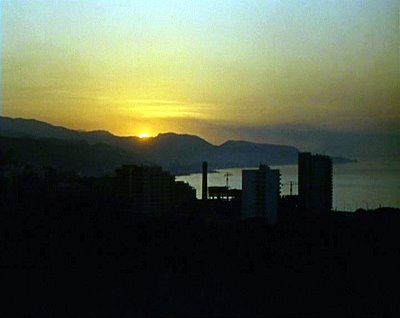
DEPARTMENT
S: Les Fleurs
du Mal (Cyril
Frankel: Early 1969)
Unknown
1: Jason
King is skiing in the Alps when he breaks his
leg.
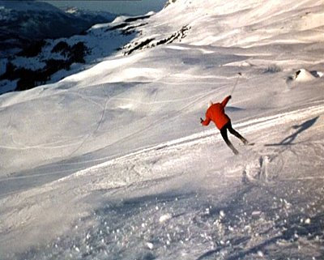
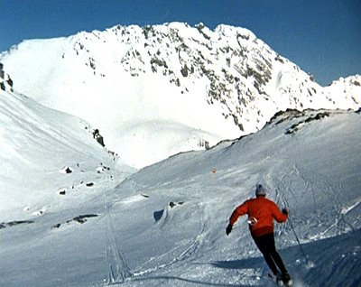
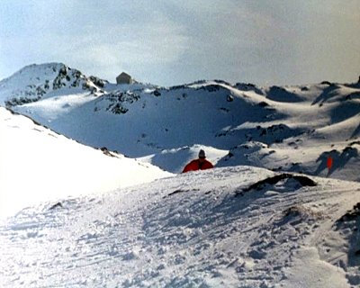
Unknown 2: Weber and his men go in search of Johnny’s secret with Stuart Sullivan in tow. Sullivan looks through the rear view mirror to see if help is on its way.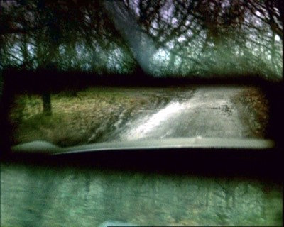
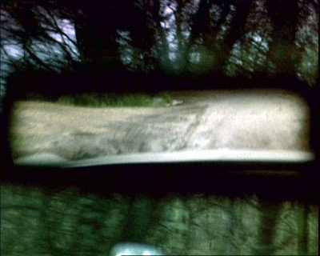
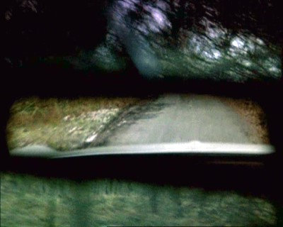
DEPARTMENT
S: Dead Men Die Twice
(Ray Austin: 1968)
Saintes-Maries-de-la-Mer in
Camargue, Bouches-du-Rhône, Provence, France: Gorge
Bayer is
photographing a traditional festival in southern France on the 9th of
July when
he spots a familiar face (ceremony at Saintes-Maries-de-la-Mer on 24
and 25 May each year outside the Church of Saint Michael).
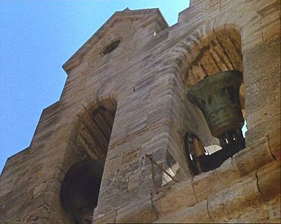
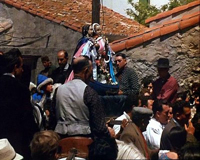
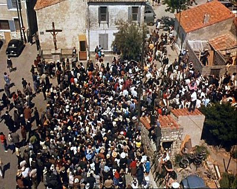
Unknown 1: Jason King is mountain climbing and plants a Mark Caine on the summit he has conquered. World
Backgrounds clip 1408
“panoramic
view of Austrian alps with snow, showing clouds beneath camera in
places.”
World
Backgrounds clip 1408
“panoramic
view of Austrian alps with snow, showing clouds beneath camera in
places.”
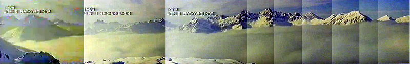
Unknown 2: Annabelle is driven at speed by ‘The Dandy’ who says he is taking her to see Lomax.
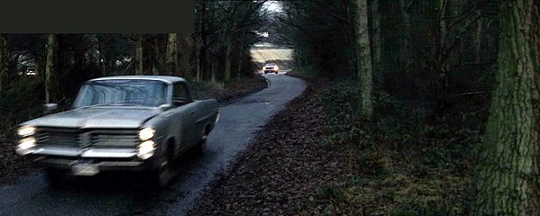
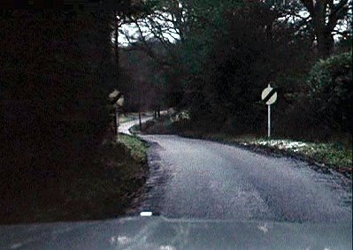
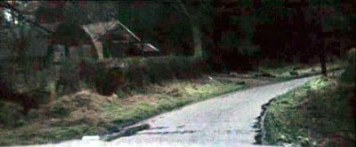
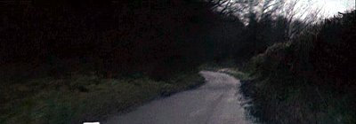
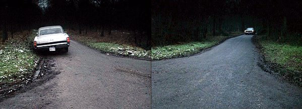
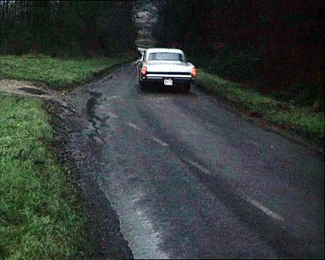
Later Madame Tania Andre is taken by force from an Athens café by Alain who is after Lomax. Sullivan and Jason follow them in Jason’s Bentley. Jason manages to force Alain’s car off the road.
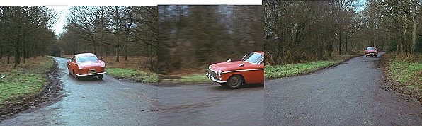
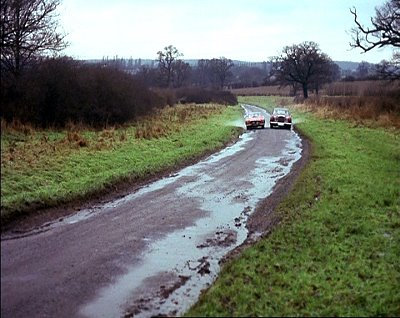
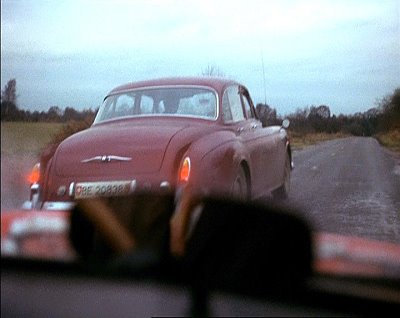
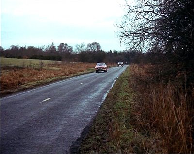
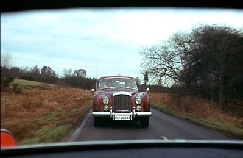
DEPARTMENT
S: A Ticket to Nowhere
(Cyril Frankel: Early 1969)
Unknown 1: Jason
drives to Westerly
Grange in his Bentley.
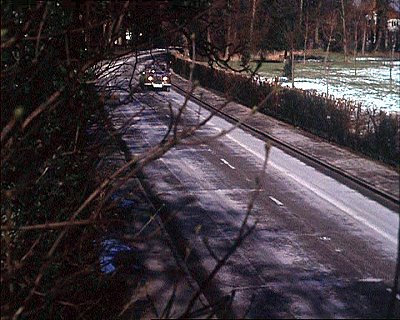
Think you know a spot? Need a bigger image? Email me.
< Previous | Index | Avengerland | Next >